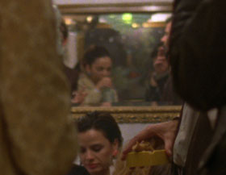

El Futuro

Luis López Carrasco – Spain 2013 – 68 min.
B: Brays Efe, Luis López Carrasco, Luis E. Parés – COP: Ion de Sosa – P: Ion de Sosa, Luis Ferrón, Manuel Calvo, Roberto Butragueño
With Lucía Alonso, Queta Herrero, Rafael Ayuso u.a.
16mm/digital – spanish
A party in 1982 on the eve of the election that was to give Socialist leader Felipe González an absolute majority. We hear a radio report in which he announces his plans for the future: defence of the (still young) democracy, conquering the economic crisis and strengthening the unity of Spain.
At the party that, as El Pais put it, 'lasted so long that 30 years passed before daylight came back,' twenty-somethings and thirty-somethings talk animatedly about relationships, drugs, horoscopes, the ETA, etc. Meanwhile, very cool Spanish new-wave music is playing. – IFF Rotterdam
Closing film – Wednesday 15/10 10.30 p.m. Werkstattkino
Luis López Carrasco, born in 1981 in Murcia, Spain. In 2008, he founded with Javier Fernández Vázquez and Natalia Marín Sancho the film collective Los Hijos. Together they make experimental films and documentaries.
Films (Los Hijos, selection): El sol en el sol del membrillo 2008 (9. UX) – Los materiales 2010 – Tarde de verano 2010 – Enero 2012